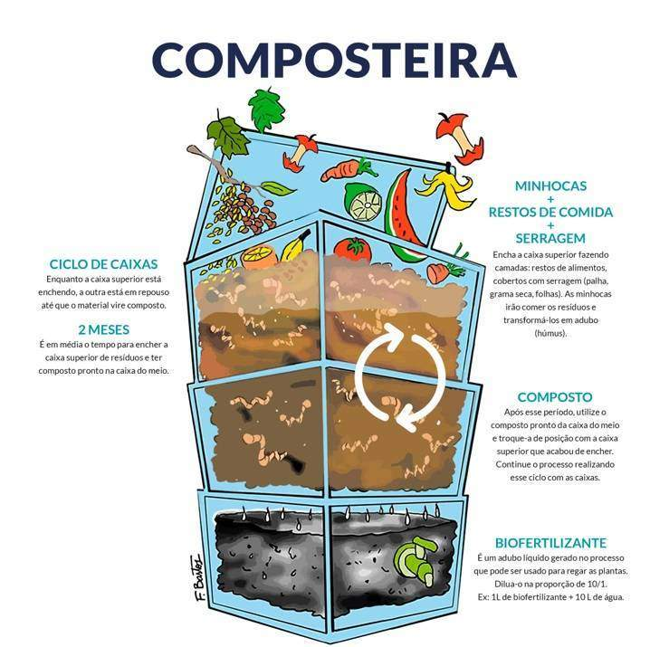
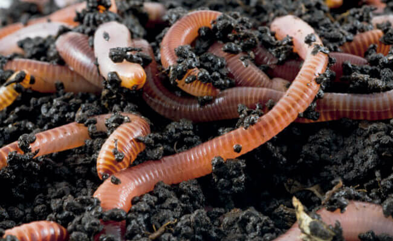

Como montar uma composteira?
A estrutura da composteira doméstica é em formato de caixa e possui três partes separadas. Ela pode ser comprada pronta para uso em casas de produtos agrícolas.
Algumas pessoas com experiência em reciclagem montam a própria estrutura de compostagem utilizando um balde ou caixas de madeira. Nesses casos, é preciso ter mais domínio do processo para evitar erros que comprometam a eficácia da compostagem.
O próximo passo, depois da composteira pronta, é a escolha de um local para colocá-la. Esse ambiente precisa ser arejado e ficar longe do sol, da chuva, de animais de estimação e áreas de circulação.
Quem mora em apartamento pode fazer compostagem caseira também, se tiver um pouco mais de espaço disponível na cozinha, na área de serviço ou na varanda.
Vale destacar que o principal método de compostagem doméstica utiliza minhocas vermelhas, também conhecidas como californianas. As minhocas são as estrelas principais desse processo porque se alimentam dos restos orgânicos, acelerando a compostagem.
Por fim, com a caixa instalada e pronta para uso, o passo a passo para fazer compostagem doméstica é o seguinte:
Abaixo um video para te guiar:
link: Composteira de balde como fazer - COMPOSTAGEM?
1. Coloque a terra com as minhocas na caixa superior
A caixa superior da composteira é uma das caixas digestoras e onde fica o lixo orgânico. Ela tem furos no fundo que vão permitir que o excesso de líquido da decomposição dos resíduos escorra para a caixa de baixo e também alguns na tampa.
O primeiro passo da montagem é espalhar a terra com as minhocas em todo o fundo da caixa até cobrir toda a base.
2. Coloque os restos orgânicos
Ao colocar os restos orgânicos na composteira não espalhe. O correto é que você coloque os resíduos em um canto e cubra-os completamente com algum tipo de matéria vegetal seca como serragem, grama, palha ou folhas.
Isso equilibra os níveis de nitrogênio e carbono durante a compostagem e evita o aparecimento de moscas e de mau cheiro da decomposição.
3. Deixe os resíduos descansarem
A caixa gestora superior vai sendo cheia com mais lixo e os resíduos devem ficar “descansando” por, no mínimo, 30 dias para o ciclo de compostagem acontecer.
De 15 em 15 dias, o material pode ser misturado para aerar a terra. Isso contribui para que a decomposição aconteça mais rápido.
Caso faça muito calor na sua região, regue a composteira para manter a umidade da caixa, pois a umidade também é um fator fundamental para que as minhocas se mantenham vivas e trabalhando na decomposição dos resíduos orgânicos.
4. Troque a posição das caixas digestoras
Depois de completar o ciclo de 30 dias, a primeira caixa digestora passa para o meio e a segunda caixa digestora passa para o topo. Dessa forma, ela pode ser abastecida de terra com minhoca e receber mais lixo orgânico para ser decomposto por mais 30 dias.
Depois, o ciclo se repete, assim como o revezamento das caixas, e a composteira se mantém ativa e gerando adubo de forma natural e sustentável.
5. Retire o adubo
Ao completar o segundo ciclo, a caixa do meio terá uma terra rica em nutrientes, chamada de húmus de minhoca, um adubo natural poderoso que pode ser usado em diversos cultivos e nos cuidados com as plantas e nos jardins de casa.
Para retirar o húmus, coloque a caixa no sol, pois as minhocas vão para o fundo para fugir da luz e, assim, é possível raspar a terra sem retirá-las.
Na terceira caixa, fica armazenado o chorume orgânico, também chamado de biofertilizante líquido, que pode ser diluído em água e ser usado para regar plantas e o jardim.